18 Color scales
Non-color aesthetic scales are covered in Chapter 19. Color is used in two aesthetics: color and fill. Like other scales, color scales have five types: continuous, binned, discrete, manual, and identity. All five types have a scale_color_*() function and an equivalent scale_fill_*() function. Most of the example use the scale_color_*() variants, but the concepts are all the same with scale_fill_*().
18.1 Resources
- Scales documentation
- ggplot2 Cheatsheet: Scales
- scales package: color
- Wickham, ggplot2 Book: Color scales
- R for Data Science: Communication, Scales
-
Cédric Scherer, Graphic Design with ggplot2 at RStudio conf 2022: Working with colors
- See the notes on the workshop
- Zeileis and Murrell, “Coloring in R’s Blind Spot”1
Base plots
Code
pcont <- penguins |>
ggplot(aes(x = flipper_length_mm,
y = body_mass_g,
color = bill_depth_mm)) +
geom_point(size = 2) +
labs(color = "Bill depth")
pdisc <- penguins |>
ggplot(aes(x = flipper_length_mm,
y = body_mass_g,
color = species_sex)) +
geom_point(size = 2)18.2 Color functions
The default color scales are provided to quickly choose a palette type. To manually set colors it is better to use the lower-level functions designed for creating color scales. ggplot2 also provides functions to use the popular Color brewer and Viridis sets of color palettes that are designed for discrete and continuous scales respectively.
18.2.1 Default color scales
- Continuous scales:
typeis “gradient” or “viridis” - Binned scales:
typeis “gradient” or “viridis” - Discrete scales:
typeisscale_fill_hue()orscale_color_brewer()
18.2.2 Creating color scales
- Continuous scales: Gradient
-
scale_color_gradient(): produces a two-color sequential gradient. -
scale_color_gradient2(): produces a three-color diverging gradient with specified midpoint. -
scale_color_gradientn(): produces an n-color gradient. Used to transform a discrete color palette—often from a color palette package—to a continuous color palette.
-
- Binned scales: Binned variants of gradient scales that work in the same way
- Discrete scales
scale_color_hue()scale_color_grey(start = 0.2, end = 0.8)
- Manual scales
- Identity scales
18.2.3 Color brewer scales
Color brewer: sequential, diverging and qualitative color schemes designed for use on discrete values on a map. They are designed for discrete scales.
- Standard discrete color brewer scales
- Continuous scale
- Binned scale
- Types of scales:
type- “seq” (sequential), “div” (diverging), or “qual” (qualitative)
- Palettes:
palette- Diverging: BrBG, PiYG, PRGn, PuOr, RdBu, RdGy, RdYlBu, RdYlGn, Spectral
- Qualitative: Accent, Dark2, Paired, Pastel1, Pastel2, Set1, Set2, Set3
- Sequential: Blues, BuGn, BuPu, GnBu, Greens, Greys, Oranges, OrRd, PuBu, PuBuGn, PuRd, Purples, RdPu, Reds, YlGn, YlGnBu, YlOrBr, YlOrRd
18.2.4 Viridis scales
The viridis scales provide color palettes that are perceptually uniform in both color and black-and-white. They are also designed to be perceived by viewers with common forms of color blindness. They are particularly good for continuous scales.
- Continuous scales
- Binned scales
- Discrete scales
- Palette options:
option- “magma” (or “A”), “inferno” (or “B”), “plasma” (or “C”), “viridis” (or “D”), “cividis” (or “E”), “rocket” (or “F”), “mako” (or “G”), “turbo” (or “H”)
18.3 ggplot2 color scales
Colors have the same types of scales as the other scales: continuous, binned, discrete, manual, identity and date.
18.3.1 Continuous color scales
Default continuous scale
The default scale for continuous color scales is scale_color_continuous(), which defaults to using scale_color_gradient().
pcont +
scale_color_continuous()
pcont +
scale_color_gradient()

Gradient continuous scales
To create your own continuous color scale use the gradient functions. There are three gradient functions that create two-color sequential, diverging, and n-color gradients.
scale_color_gradient() takes colors for the low and high values to create a gradient sequentially moving from one color to the other.
pcont +
scale_color_gradient(
low = "#E5940E",
high = "#454B87"
)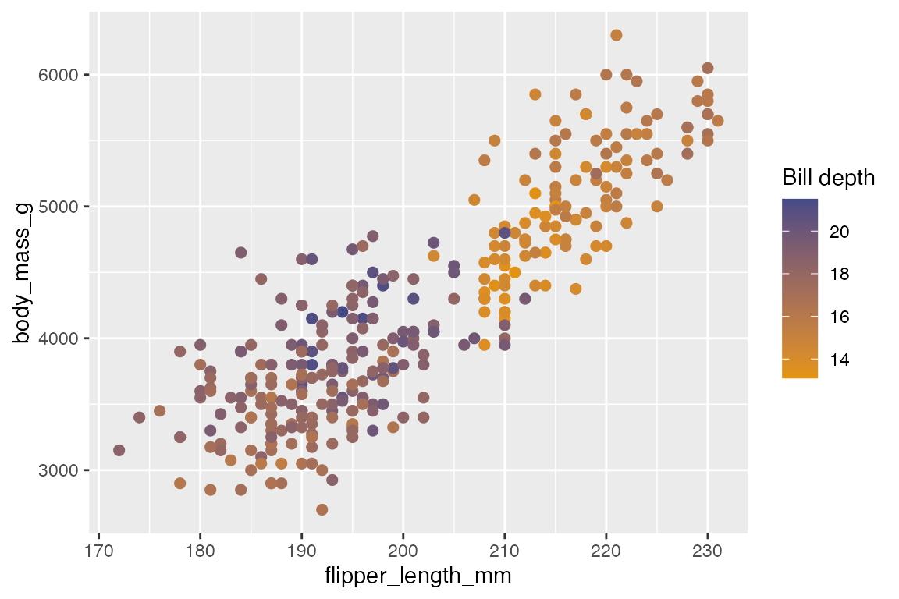
scale_color_gradient2() adds an argument for mid to create a midpoint to be used in a diverging scale and midpoint for the value used as the middle of the scale. midpoint defaults to 0, so you will likely need to specify it. The default uses a muted red and blue for low and high values and white for the midpoint.
pcont +
scale_color_gradient2(
midpoint = mean(penguins$bill_depth_mm))Create your own diverging gradient by providing low, mid, and high.
pcont +
scale_color_gradient2(
low = "#E5940E",
mid = "white",
high = "#454B87",
midpoint = mean(penguins$bill_depth_mm)
)scale_color_gradientn() creates an n-colored gradient. The function needs a vector of colors to work, and the colors argument must be named. You can provide your own color palette, a palette using the scales::*_pal() functions, a base R color palette, or one from a color palette package. When using predefined color palettes, the colors used for the gradient may change depending on the number of colors used to create the palette if the palette is dynamic. For instance, notice the difference in the gradient created with 6 vs 25 terrain colors: the changes across the gradient are more subtle with 25 colors.
# 6 terrain color gradient
pcont +
scale_color_gradientn(
colors = terrain.colors(6))
# 25 terrain color gradient
pcont +
scale_color_gradientn(
colors = terrain.colors(25))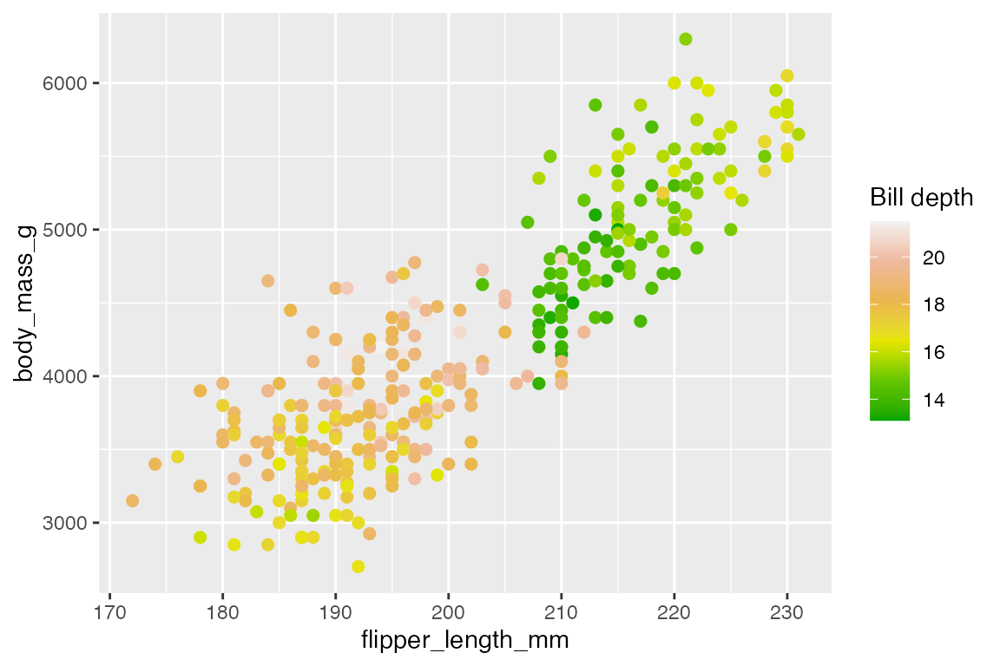
scale_color_gradientn() is important for transforming a discrete palette into a continuous palette. This makes it the primary way to use color packages with a continuous color scale.
Color brewer continuous scales
scale_color_distiller() provides continuous color scales using the Color Brewer palettes that are designed for discrete data. Use the type argument to choose between sequential "seq", diverging "div", and qualitative "qual" palettes. This is a quick way to choose the default palette for each type and can be used with the numerical manner for choosing a palette. Or just write the name of the palette in the palette argument.
Sequential
pcont +
scale_color_distiller()Diverging
pcont +
scale_color_distiller(palette = "PuOr")Qualitative: n-gradient
pcont +
scale_color_distiller(palette = "Set1")Viridis continuous scales
The viridis colors are the most well suited to a continuous scale among the built in ggplot2 color scales. They are designed to be perceptually uniform in both color and when reduced to black and white, and to be perceptible to people with various forms of color blindness.
You can access the viridis palette from scale_color_continuous()
pcont +
scale_color_continuous(type = "viridis")Or use scale_color_viridis_c(), which provides more options, including the ability to choose among the 8 viridis palettes.
pcont +
scale_color_viridis_c()
pcont +
scale_color_viridis_c(option = "A")
Date color scales
scale_color_date() is a special form of continuous color scales. It is only different in that it provides access to the date_breaks and date_labels arguments used in date scales as discussed in Section 17.5.2.6.
18.3.2 Binned color scales
Binned color scales take continuous data and map them into bins. The default binned color scale is scale_color_binned(), which in turn defaults to scale_color_steps(). The scale_color_steps() family of functions are analogous to the scale_color_gradient() family of functions other than providing a n.breaks argument from binned scales. Another difference from gradients is the use of the colorsteps style legend instead of colorbar.
Default binned scale
pcont +
scale_color_binned()Color steps
Use the scale_color_steps() functions to get sequential, diverging, and qualitative bins.
Sequential
pcont +
scale_color_steps(
low = "#E5940E",
high = "#454B87"
)Diverging
pcont +
scale_color_steps2(
n.breaks = 8,
low = "#E5940E",
mid = "white",
high = "#454B87",
midpoint = mean(penguins$bill_depth_mm)
)Qualitative
As with scale_color_gradientn() the number of colors used to create the palette may change the colors used for the bins.
pcont +
scale_color_stepsn(
colors = terrain.colors(6)
)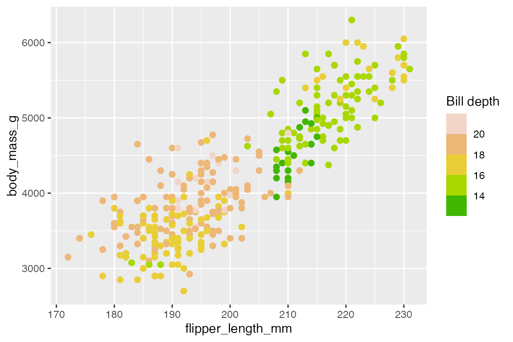
Viridis and color brewer
The binned versions of the viridis and color brewer palettes work in the same way as scale_color_steps() with the n.breaks argument and their continuous variants.
Color brewer
scale_color_fermenter() has the same ability to pick a type and palette:
pcont +
scale_color_fermenter(palette = "Oranges")
Viridis
scale_color_viridis_b() has the same ability to pick a palette option:
pcont +
scale_color_viridis_b(option = "A")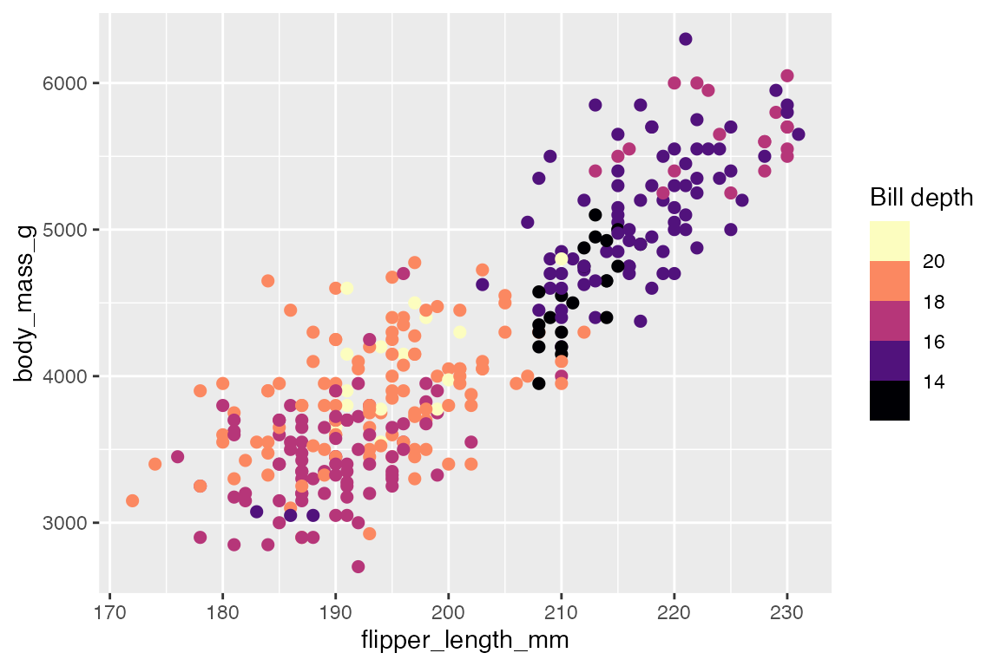
18.3.3 Discrete color scales
Default discrete scale
The default scale for discrete color scales is scale_color_discrete(), which defaults to using scale_color_hue().
pdisc +
scale_color_discrete()
pdisc +
scale_color_hue()
Use scales::hue_pal() to recreate or access the discrete color palette used for a plot. Making sure to use the length of the discrete colors, as the colors used changes with the length of the palette.
# Palette used for pdisc
scales::hue_pal()(6)
#> [1] "#F8766D" "#B79F00" "#00BA38" "#00BFC4" "#619CFF" "#F564E3"
show_col(scales::hue_pal()(6))This can be used with scale_color_manual() to color a subset of the groups. See the discussion in Annotations: Highlighting and below Section 18.3.4.
HCL color scale
scale_color_hue() provides access to HCL colors directly within ggplot2. The default color scheme picks evenly spaced hues around the HCL color wheel. The functions do not produce color blind compatible palettes.
- Hue: Color on a range from 0 to 360 (an angle).
- Chroma: Purity of a color, ranging from 0 (grey) to a maximum that varies with luminance.
- Luminance: Lightness of the color, ranging from 0 (black) to 1 (white).
scale_color_hue() provides arguments to customize each of these aspects:
-
h: Range of hues to use between 0 and 360; default isc(0, 360) + 15 -
h.start: What hue to start at. This can affect the colors, or just the order of the colors if the angle chosen is a product of the number of discrete variables divided by 360. For instance,pdischas six levels, soh.start = 60uses the same colors as the default but moves the order of the colors up one. On the other hand,h.start = 45changes the colors used because 45 x 6 is not 360. -
c: Chroma value; default is100. Higher values leader to brighter colors, lower values lead to more muted colors. -
l: Lightness of the color from 0 to 100; default is 65. Higher values lead to more white, light colors, lower values lead to darker colors.
Hue: compare using only the third-fourth of the color wheel (left) to the default that uses all of it (right).
# Use smaller part of wheel
pdisc +
scale_color_hue(h = c(180, 270))
# Default: whole wheel
pdisc +
scale_color_hue()
h.start: compare changing the order of the colors (left) to changing the colors used (right).
# Move order of colors up 1
pdisc +
scale_color_hue(h.start = 60)
# Change colors used
pdisc +
scale_color_hue(h.start = 30)Chroma: compare the muted colors with a lower chroma (left) to the almost neon colors with a higher chroma (right).
# Low chroma: Muted
pdisc +
scale_color_hue(c = 50)
# High chroma: Bright
pdisc +
scale_color_hue(c = 150)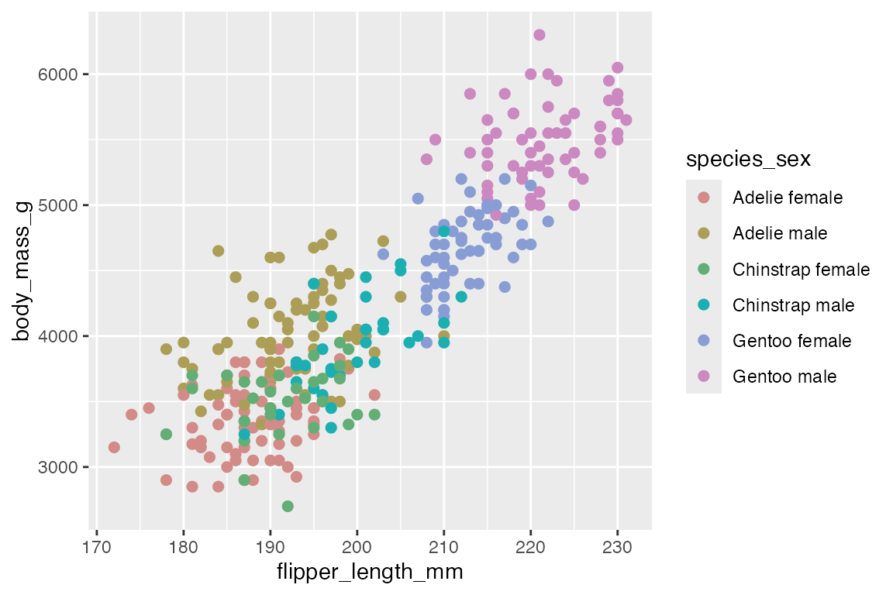
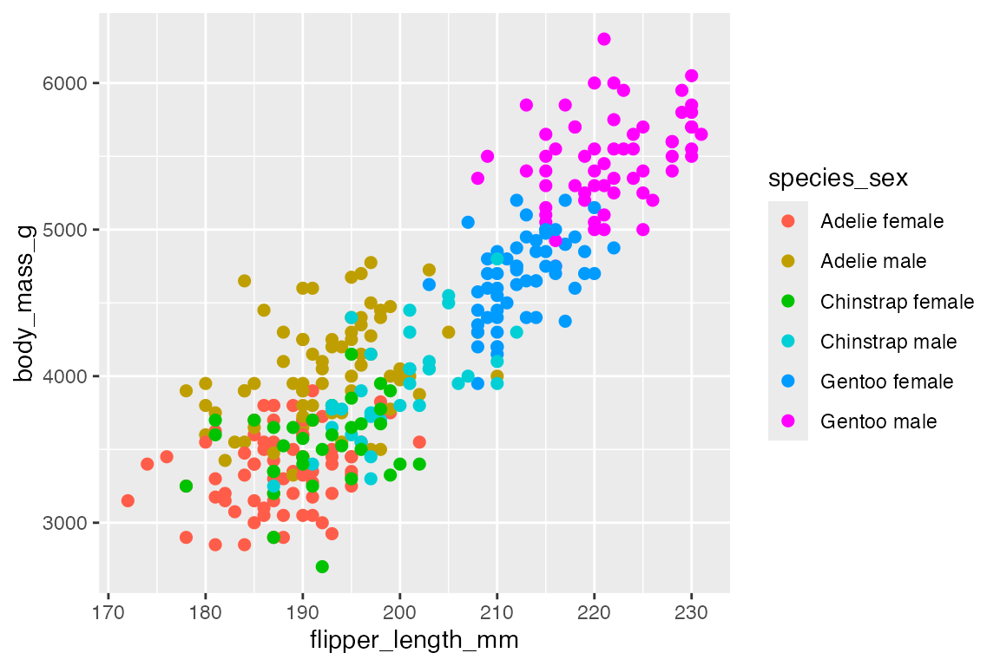
Lightness: compare the darker colors with lower lightness (left) to the brighter pastel-like colors with higher lightness (right).
# Lower l: Dark
pdisc +
scale_color_hue(l = 40)
# Higher l: Light
pdisc +
scale_color_hue(l = 85)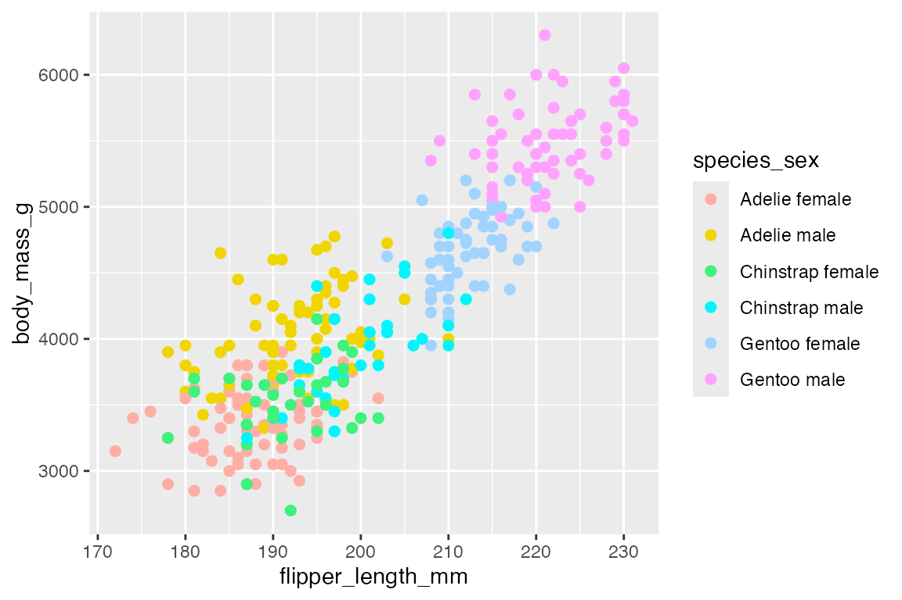
Gray color scale
scale_color_hue() uses colors that have the same chroma (c) and luminance (l) and so they appear as the same shade of gray when printed in black and white. If you are making plots that will be in black and white it is best to use scale_color_grey() (note the British spelling), which is base on gray.colors(). The main arguments are start and end: limits on a scale of 0 (black) to 1 (white); the defaults are start = 0.2 and end = 0.8. It is probably best not to use a gray background.
pdisc +
scale_color_grey(start = 0, end = 0.7) +
theme_minimal()Color brewer and viridis
Whereas the viridis palettes are best suited for continuous scales, color brewer is designed specifically for discrete scales. For ordered discrete values the sequential (“seq”) palettes are useful, while unordered categorical data is best visualized with the qualitative (“qual”) palettes. “Set1” and “Dark2” are particularly good for points, and “Set2”, “Pastel1”, “Pastel2” and “Accent” work well for areas.
pdisc +
scale_color_brewer(palette = "Dark2")scale_color_viridis_d() provides the same set of viridis palettes in a discrete scale:
pdisc +
scale_color_viridis_d()18.3.4 Manual and identity scales
Manually setting colors for discrete data can be useful if you want to quickly create your own palette, or if you want to choose colors that have a specific relationship to the data, such as blue for democrat and red for republican in a voting map. For instance, you can group together the penguin species with similar colors and use darker colors for male and lighter for female.
The colors are chosen using the values argument which can either be a vector of colors or a named vector of colors that corresponds to the levels of the data. scale_color_manual() is the primary way within the ggplot2 package to get access to discrete palettes provided by other color packages: scale_color_manual(values = palette), see Section 18.5.
pdisc +
scale_color_manual(
values = c("chocolate", "chocolate1",
"dodgerblue4", "dodgerblue",
"seagreen", "seagreen3")
)A named vector makes the color mapping more clear. This can be done outside or inside the scale_color_manual() function.
pdisc +
scale_color_manual(
values = c(
"Adelie female" = "chocolate",
"Adelie male" = "chocolate1",
"Chinstrap female" = "dodgerblue4",
"Chinstrap male" = "dodgerblue",
"Gentoo female" = "seagreen",
"Gentoo male" = "seagreen3")
)
A common workflow for using scale_color_manual() is to color a subset of discrete groups using the same color scale that would be used for all groups. This is the basis for highlighting groups or certain instances shown in Annotations: Highlighting. This is done by taking a subset of the discrete palette constructor scales::hue_pal() discussed in Section 18.3.3. For instance, we can color only the male penguins but maintain the same color palette as used in pdisc. Compare the use of the default palette to maintaining the palette used when there are six groups.
# Default discrete scale
penguins |>
ggplot(aes(x = flipper_length_mm,
y = body_mass_g)) +
geom_point(color = "gray60") +
geom_point(data = filter(penguins, sex == "male"),
aes(color = species)) +
labs(color = "Males")# Use same color scale as pdisc
penguins |>
ggplot(aes(x = flipper_length_mm,
y = body_mass_g)) +
geom_point(color = "gray60") +
geom_point(data = filter(penguins, sex == "male"),
aes(color = species)) +
scale_color_manual("Males",
values = scales::hue_pal()(6)[c(2, 4, 6)])scale_color_identity() works similarly, but the colors to be used are in the data frame.
18.4 Labels, breaks, and legends
Just as with the scales described in Chapter 19 you can change the breaks and labels of scales and how they are expressed in legends using the scale_color_*() functions. For more on the look of legends, see Section 21.4.2 on choosing the type of legend and Section 21.8.2 for styling color legends.
Change the breaks and reverse the colorbar.
pcont +
scale_color_continuous(breaks = c(15, 17, 21),
guide = guide_colorbar(reverse = TRUE))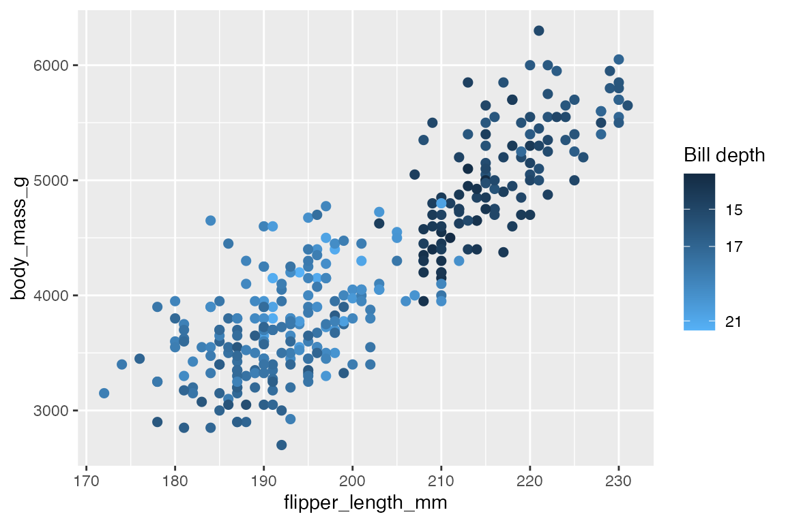
Create a legend that only shows the colors of females of the three species.
pdisc +
scale_color_discrete(
"Females",
breaks = c("Adelie female", "Chinstrap female", "Gentoo female"),
labels = c("Adelie", "Chinstrap", "Gentoo")
)18.5 Color palette packages
Load packages
18.5.1 Overview
Most color palette packages have two main types of functions: scale functions that are usually named scale_color_*() and are meant to replace the ggplot2 scale functions and pal functions that provide access to the hex values of palettes that can then be used with scale_color_manual() or scale_color_gradientn() to create a continuous palette. The API for accessing these functions differs. This has led to the creation of paletteer (Section 18.5.11) to try to create a common interface for palettes.
Most of the color packages have functions to list the name of the available palettes and to view the palettes as a plot. A particularly useful way to view a palette before using it is with scales::show_col().
18.5.2 palettes pkg
A fun, quick alternative to scales::show_col() is to use the palettes package, which uses vctrs to print vectors of colors as hex rbg values with a color preview. palettes has its own way to access color palettes in ggplot2, but it is particularly useful for printing out a vector of colors with pal_color().
18.5.3 Scales pkg
scales provides a number of functions to specify palettes and perform color mapping that provide the basis for the color scale functions in ggplot2. The *_pal() functions have consistent APIs with their associated scale_color_*() variants in ggplot2. The *_pal() functions all return a function. Thus, to access the hex color values you need to add another set of parentheses: discrete palettes take an n, while continuous palettes take a vector of values from 0 to 1 that produce length(x) colors.
Once you have a palette, you can view the colors with scales::show_col(). This provides a good workflow to view the color palette and make any changes you want.
Discrete palettes
brewer_pal()viridis_pal()hue_pal()grey_pal()-
dichromat_pal(): color-blind discrete palettes
Discrete palette constructors use the form *_pal()(n):
brewer_pal(palette = "Oranges")(9)
#> [1] "#FFF5EB" "#FEE6CE" "#FDD0A2" "#FDAE6B" "#FD8D3C" "#F16913" "#D94801"
#> [8] "#A63603" "#7F2704"
show_col(brewer_pal(palette = "Oranges")(9))hue_pal() and show_col() provide a good way to play around with HCL colors and see what changes to hue, chroma, and luminance does.
show_col(hue_pal()(9))
show_col(hue_pal(h = c(0, 120))(9))
show_col(hue_pal(c = 60)(9))
show_col(hue_pal(l = 90)(9))grey_pal() is the same as grey.colors() though it uses different starting and ending points.
show_col(grey_pal()(16))
show_col(grey.colors(16, 0.2, 0.8))
Continuous palettes
Continuous palette constructors use the form *_pal()(seq(0, 1, length.out = n)). Like their scale_color_*() variants, these functions take 2, 3, or n colors and create a continuous scale.
Create a vector of n values:
x <- seq(0, 1, length.out = 16)Creating sequential and divergent gradients:
show_col(
seq_gradient_pal(
"#E5940E", "#454B87"
)(x))
show_col(
div_gradient_pal(
"#E5940E", "white", "#454B87"
)(x))Like its scale variant, gradient_n_pal() is useful for taking a discrete palette and turning it into a continuous palette. For instance, you can take colors from a Color Brewer palette and turn it into a continuous scale with many more colors.
# Discrete diverging scale
cols <- brewer_pal("div")(9)
show_col(cols)
# Continuous diverging scale
show_col(
gradient_n_pal(cols)(x))
This process shows an approximation of the colors that would be used in a continuous scale with the scale_color_gradient*() functions. Thus, you can replicate scale_color_distiller() with slightly different colors, as scale_color_distiller() has more colorful values towards the middle. The only other change is that scale_color_distiller() uses direction = -1.
pcont +
scale_color_gradientn(
colors = cols)
pcont +
scale_color_distiller(
palette = "BrBG", direction = 1)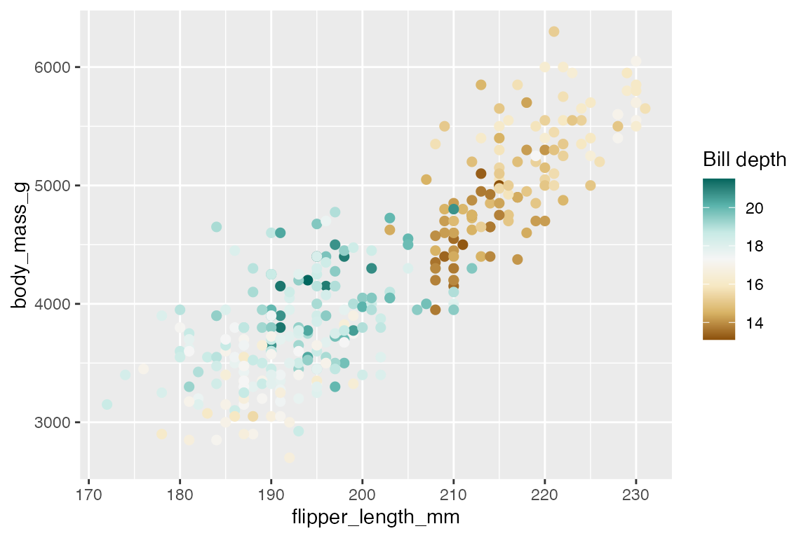
18.5.4 Base color palettes
R comes with a number of base color palettes. On the changes in base color palettes from R 3.6 and 4.0 see:
- Zeileis and Murrell, “Coloring in R’s Blind Spot”
- HCL-Based Color Palettes in grDevices
- A New palette() for R
Post R 4.0 palettes
-
palette(): Default discrete R palette of 8 colors “R4” -
palette.colors(n, palette): Access to a set of discrete palettes; default is “Okabe-Ito”-
palette.pals(): Vector of palette names to use inpalette.colors().
-
-
hcl.colors(n, palette): Continuous hcl color palettes; default is “viridis”-
hcl.pals(): Vector of 115 continuous color palettes
-
Older palettes
Discrete palettes
The default palette in R after R 4.0 is “R4”.
palette.colors(n, palette) provides access to a range of discrete palettes that are listed with palette.pals(). The default palette is “Okabe-Ito”. Several palettes comes from Color Brewer, see Section 18.2.3.
palette.pals()
#> [1] "R3" "R4" "ggplot2" "Okabe-Ito"
#> [5] "Accent" "Dark 2" "Paired" "Pastel 1"
#> [9] "Pastel 2" "Set 1" "Set 2" "Set 3"
#> [13] "Tableau 10" "Classic Tableau" "Polychrome 36" "Alphabet"show_col(
palette.colors())
show_col(
palette.colors(palette = "Pastel 1"))You can change the defualt palette used by R by passing one of the palettes to the palette() function: palette("Okabe-Ito").
hcl.colors() has 9 discrete color palettes that vary only in hue and have the same chroma and luminance. The first 5 palettes are derived from Color Brewer and are similar to the palettes present in palette.colors(). These are all very neutral palettes.
# Qualitative palettes
hcl.pals("qualitative")
#> [1] "Pastel 1" "Dark 2" "Dark 3" "Set 2" "Set 3" "Warm" "Cold"
#> [8] "Harmonic" "Dynamic"
show_col(hcl.colors(9, palette = "Pastel 1"))Continuous palettes
hcl.colors() is a simplified implementation of the color palettes from the colorspace package, see Section 18.5.5. This means that you can use the colorspace package to use these palettes directly in ggplot2.
hcl.colors() does not select from a fixed set of colors but provides a specific path in the HCL color space. For hue, chroma, and luminance a color palette can have either a constant, linear, or triangular trajectory within the HCL values. The default is viridis:
show_col(hcl.colors(9))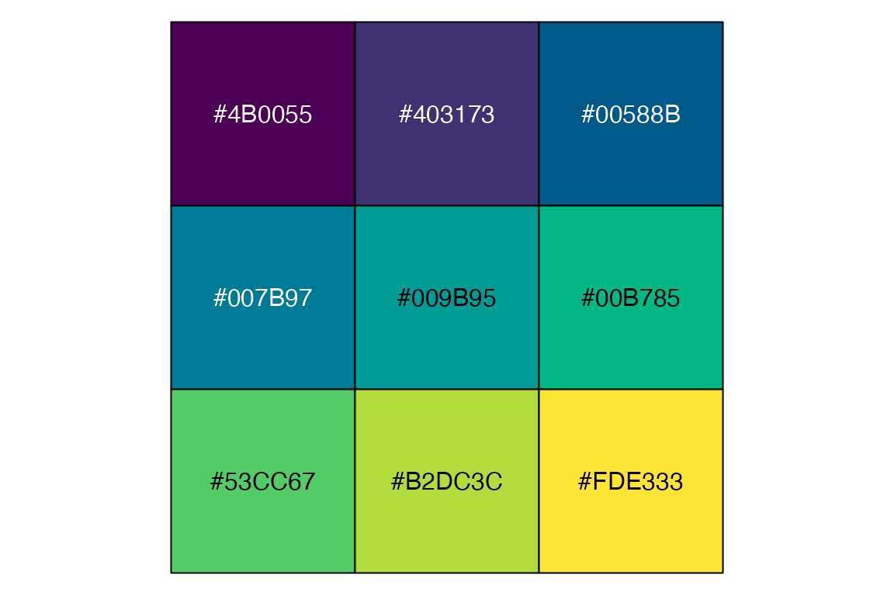
hcl.colors() has single hue, multi-hue, diverging, and divergingx palettes which can be listed with “qualitative”, “sequential”, “diverging”, or “divergingx” in hcl.pals().
The single hue are all inspired by Color Brewer except Oslo, which is from the scico package.
# Single hue palettes
hcl.pals()[10:20]
#> [1] "Grays" "Light Grays" "Blues 2" "Blues 3" "Purples 2"
#> [6] "Purples 3" "Reds 2" "Reds 3" "Greens 2" "Greens 3"
#> [11] "Oslo"
show_col(hcl.colors(9, "reds 3"))The multi-hue palettes are similar to those from colorspace, viridis, rcartocolor, and scico.
# Multi-hue palettes
hcl.pals()[21:79]
#> [1] "Purple-Blue" "Red-Purple" "Red-Blue" "Purple-Orange"
#> [5] "Purple-Yellow" "Blue-Yellow" "Green-Yellow" "Red-Yellow"
#> [9] "Heat" "Heat 2" "Terrain" "Terrain 2"
#> [13] "Viridis" "Plasma" "Inferno" "Rocket"
#> [17] "Mako" "Dark Mint" "Mint" "BluGrn"
#> [21] "Teal" "TealGrn" "Emrld" "BluYl"
#> [25] "ag_GrnYl" "Peach" "PinkYl" "Burg"
#> [29] "BurgYl" "RedOr" "OrYel" "Purp"
#> [33] "PurpOr" "Sunset" "Magenta" "SunsetDark"
#> [37] "ag_Sunset" "BrwnYl" "YlOrRd" "YlOrBr"
#> [41] "OrRd" "Oranges" "YlGn" "YlGnBu"
#> [45] "Reds" "RdPu" "PuRd" "Purples"
#> [49] "PuBuGn" "PuBu" "Greens" "BuGn"
#> [53] "GnBu" "BuPu" "Blues" "Lajolla"
#> [57] "Turku" "Hawaii" "Batlow"
show_col(hcl.colors(9, "Lajolla"))The diverging palettes use contrasting colors on the extremes with either light gray or yellow at the center. The palettes are similar to those from colorspace, rcartocolor, and scico. There are also flexible diverging palettes that do not have restrictions on balancing the ends and can go through other colors in the middle.
# Diverging palettes
hcl.pals()[80:115]
#> [1] "Blue-Red" "Blue-Red 2" "Blue-Red 3" "Red-Green"
#> [5] "Purple-Green" "Purple-Brown" "Green-Brown" "Blue-Yellow 2"
#> [9] "Blue-Yellow 3" "Green-Orange" "Cyan-Magenta" "Tropic"
#> [13] "Broc" "Cork" "Vik" "Berlin"
#> [17] "Lisbon" "Tofino" "ArmyRose" "Earth"
#> [21] "Fall" "Geyser" "TealRose" "Temps"
#> [25] "PuOr" "RdBu" "RdGy" "PiYG"
#> [29] "PRGn" "BrBG" "RdYlBu" "RdYlGn"
#> [33] "Spectral" "Zissou 1" "Cividis" "Roma"
show_col(hcl.colors(9, "TealRose"))18.5.5 colorspace
The colorspace package provides a broad toolbox for selecting individual colors or color palettes, manipulating these colors, and employing them in various kinds of visualizations. As noted above, a simplified version of the color palettes from the package have been implemented in base R with hcl.colors(). The package provides three types of palettes: qualitative, sequential, and diverging. The package also provides tools for mapping HCL color space to hex values and other color representations, as well as tools to visualize and manipulate color palettes.
HCL color palettes
Use hcl_palettes() to access the palettes provided by colorspace. These are the same palettes as provided by base R with hcl.colors(), see Section 18.5.4. The main difference is that hcl.colors() does not have the ability to modify the existing palettes through the h, c, and l arguments in the palette functions.
-
hcl_palettes(plot = TRUE): View a plot of the palettes. -
hclwizard(): shiny app to view and play around with the palettes.
Many of the palettes are similar to those provided by other packages such as Color Brewer, Viridis, rcartocolors, and scico. See the vignette for a discussion and visualizations of the comparisons.
hcl_palettes()
#> HCL palettes
#>
#> Type: Qualitative
#> Names: Pastel 1, Dark 2, Dark 3, Set 2, Set 3, Warm, Cold, Harmonic, Dynamic
#>
#> Type: Sequential (single-hue)
#> Names: Grays, Light Grays, Blues 2, Blues 3, Purples 2, Purples 3, Reds 2,
#> Reds 3, Greens 2, Greens 3, Oslo
#>
#> Type: Sequential (multi-hue)
#> Names: Purple-Blue, Red-Purple, Red-Blue, Purple-Orange, Purple-Yellow,
#> Blue-Yellow, Green-Yellow, Red-Yellow, Heat, Heat 2, Terrain,
#> Terrain 2, Viridis, Plasma, Inferno, Rocket, Mako, Dark Mint,
#> Mint, BluGrn, Teal, TealGrn, Emrld, BluYl, ag_GrnYl, Peach,
#> PinkYl, Burg, BurgYl, RedOr, OrYel, Purp, PurpOr, Sunset,
#> Magenta, SunsetDark, ag_Sunset, BrwnYl, YlOrRd, YlOrBr, OrRd,
#> Oranges, YlGn, YlGnBu, Reds, RdPu, PuRd, Purples, PuBuGn, PuBu,
#> Greens, BuGn, GnBu, BuPu, Blues, Lajolla, Turku, Hawaii, Batlow
#>
#> Type: Diverging
#> Names: Blue-Red, Blue-Red 2, Blue-Red 3, Red-Green, Purple-Green,
#> Purple-Brown, Green-Brown, Blue-Yellow 2, Blue-Yellow 3,
#> Green-Orange, Cyan-Magenta, Tropic, Broc, Cork, Vik, Berlin,
#> Lisbon, Tofino
divergingx_palettes()
#> HCL palettes
#>
#> Type: Diverging (flexible)
#> Names: ArmyRose, Earth, Fall, Geyser, TealRose, Temps, Tropic, PuOr, RdBu,
#> RdGy, PiYG, PRGn, BrBG, RdYlBu, RdYlGn, Spectral, Zissou 1,
#> Cividis, RomaAccess the palettes by using the palette function that corresponds to the type of palette you desire:
show_col(
qualitative_hcl(9,
palette = "Pastel 1"))
show_col(
diverging_hcl(9,
palette = "Berlin"))
The palette functions also have arguments to alter h, c, and l to modify the palettes. This functionality is not available through the base R hcl.colors() function.
ggplot2 scales
- Continuous
- Binned
- Discrete
pcont +
scale_color_continuous_sequential(
"Lajolla")
pdisc +
scale_color_discrete_qualitative(
"Dark 3")The nmax and order arguments in the discrete scales allow you to choose which colors to use.
pdisc +
scale_color_discrete_qualitative(
"Dark 3",
nmax = 8,
order = c(8, 6, 3:5, 1))
You can use this to remove the lightest colors in sequential palettes:
pdisc +
scale_color_discrete_sequential(
"Blues", nmax = 8, order = 3:8)Like the palette functions, you can also change the h1, c1, and l1 and h2, c2, and l2 arguments for the starting and ending values. In addition, the continuous scale functions have arguments for begin and end that indicate where to begin and end on the color scale from 0 to 1.
Palette visualization and assessment
Use swatchplot() to view color palettes similar to scales::show_col().
swatchplot(
sequential_hcl(8, h = c(0, 300), c = c(60, 60), l = 65)
)Compare multiple palettes:
swatchplot(
"Qualitative" = qualitative_hcl(6, palette = "Dark 3"),
"Sequential" = sequential_hcl(6, palette = "Purples 2"),
"Diverging" = diverging_hcl(6, palette = "Tropic"),
off = 0
)Show palette with common types of color blindness with cvd = TRUE:
swatchplot(
sequential_hcl(8, palette = "Sunset"),
cvd = TRUE
)Alternatively, use spec_plot() to see the hue, chroma, and luminance coordinates of a palette. Hue is shown in red with an axis of -360 to 360 on the right, chroma is in green, and luminance in blue both of which have an axis of 0 to 100 on the left. These plots do a good job of showing the structure of the different palettes. For instance, a sequential plot maintains the same hue (color) but changes chroma and luminance in an inverse relationship. A multi-hue sequential palette will often have a triangular path in chroma. On the other hand, a qualitative palette like “Set 2” goes through the spectrum of colors while maintaining mostly stable chroma and luminance. A diverging palette such as “Blue-Red” replicates the sequential plot from two different sides,
# Sequential
specplot(sequential_hcl(
25, "Blues 2"))
# Multi-hue sequential
specplot(sequential_hcl(
25, "La Jolla"))
# Qualitative
specplot(qualitative_hcl(
25, "Set 2"))
# Diverging
specplot(diverging_hcl(
25, "Blue-Red"))Color manipulation and utilities
colorspace has tools to manipulate color palettes, particularly to desaturate, lighten, or darken them. Desaturation removes the chroma or color of a palette, turning it into a gray scale. Lightening and darkening use an algorithm to try to lighten or darken colors while maintaining correspondence in how they look.
-
desaturate(): Desaturate colors by chroma removal in HCL space to turn into gray scale. -
lighten(): Use algorithm to lighten colors in HCL space. -
darken(): Use algorithm to darken colors in HCL space.
Desaturate
cols <- sequential_hcl(25, "La Jolla")
swatchplot(
"La Jolla" = cols,
"Desaturate" = desaturate(cols))Lightening and darkening a palette can be really useful for having complementary color palettes for different types of geoms or text annotations in a plot. See Section 13.10.3 for an example of lightening and darkening a palette to add layers to a plot.
Lighten and Darken
cols <- sequential_hcl(5, "Purple-Orange")
swatchplot(
"-40%" = lighten(cols, 0.4),
"-20%" = lighten(cols, 0.2),
" 0%" = cols,
" 20%" = darken(cols, 0.2),
" 40%" = darken(cols, 0.4),
off = c(0, 0)
)lighten() and darken() have arguments for the amount to apply the manipulation, but also for the method to use and the color space within which to make the manipulation. You can play around with these arguments if the defaults are not what you want.
Another tool provided by colorspace is to calculate color contrast ratios between a palette and a color with contrast_ratio().
contrast_ratio(sequential_hcl(6, "Emrld"),
plot = TRUE)You can also use colorspace to calculate the maximum chroma for a given hue and luminance with max_chroma().
max_chroma(h = seq(0, 360, by = 60), l = 50)
#> [1] 137.96 59.99 69.06 39.81 65.45 119.54 137.9618.5.6 scico
The scico package provides access to the perceptually uniform and color-blind friendly palettes developed by Fabio Crameri. The package has 35 different palettes. The color scales are sequential, and so it is a good augmentation to the viridis palettes.
-
scico_palette_names(): Vector of palette names. -
scico_palette_show(): View the palettes. -
scico(30, palette = "lapaz"): Generate a palette withnvalues. -
scale_color_scico(): continuous color scale. -
scale_color_scico_d(): discrete color scale.
pcont +
scale_color_scico(
palette = "hawaii")
pdisc +
scale_color_manual(values =
scico(6, palette = "tokyo"))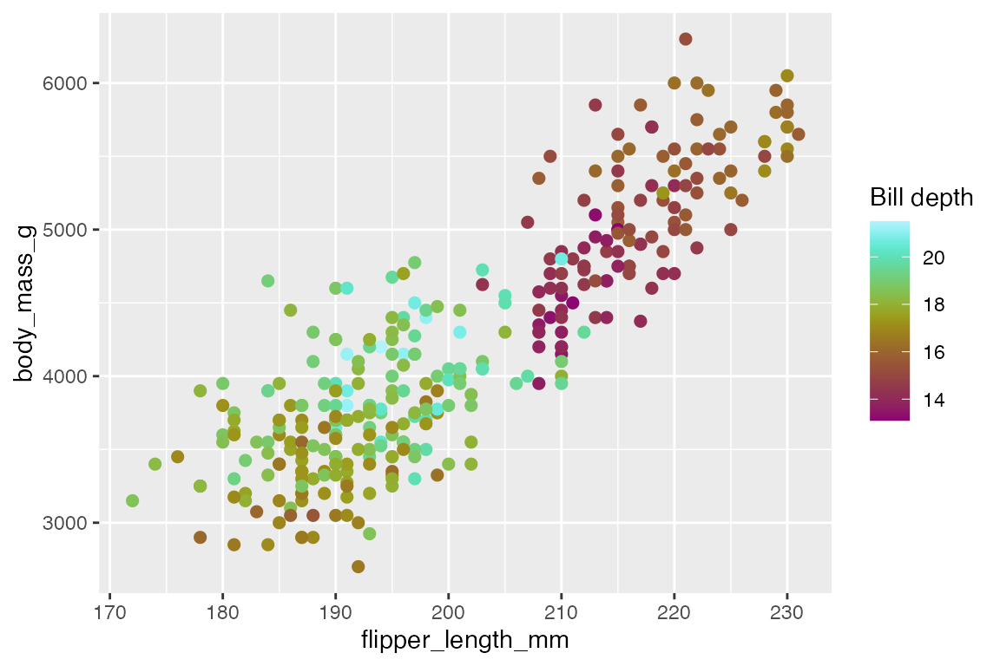
18.5.7 ggsci
ggsci offers a collection of ggplot2 color palettes inspired by scientific journals, data visualization libraries, science fiction movies, and TV shows. The palettes are mostly discrete. Each palette type has its own functions to access palettes (pal_palname()) and scale functions to use the palettes (scale_color_palname()). Each palette has different palette options.
pdisc +
scale_color_uchicago()
pdisc +
scale_color_manual(values =
pal_simpsons()(6))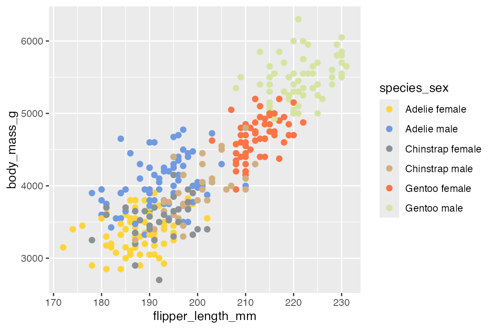
18.5.8 ggthemes
ggthemes provides a number of extra color palettes derived from the style of news organizations and other visualization platforms. Like ggsci, it has functions to access palettes (palname_pal()) and scale functions (scale_color_palname()).
pdisc +
scale_color_solarized() +
theme_solarized()
pdisc +
scale_color_manual(
values = economist_pal()(6)) +
theme_economist()
18.5.9 rcartocolors
rcartocolor provides color palettes made for mapping designed by CARTO. Similar to Color brewer, rcartocolor has sequential, diverging, and qualitative color palettes.
-
cartocolors$Name: vector of palette names-
cartocolors[c(1, 2)]: Data frame of palette names and types
-
-
display_carto_all(): display all palettes -
display_carto_pal(6, name = "Sunset"): Display a single palette withndiscrete colors. -
carto_pal(n, name): Create or access carto color palette - Scale functions
pcont +
scale_color_carto_c(
palette = "Sunset")
pdisc +
scale_color_manual(
values = carto_pal(6, "Vivid"))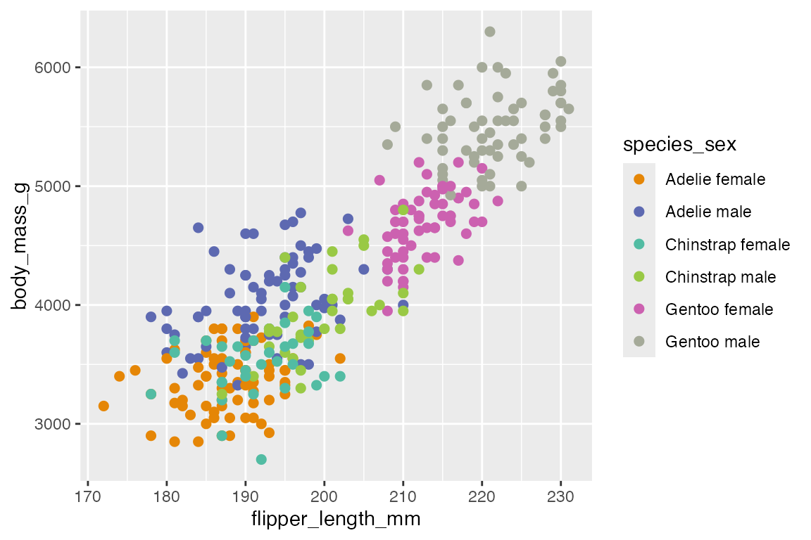
18.5.10 MetBrewer
MetBrewer contains 56 color palettes inspired by works of art at the Metropolitan Museum of Art.
-
MetPalettes: see a complete list of all the palettes and the colors used in them. -
display_all(): view all palettes. -
met.brewer(name, n): view or use an individual palette. Usento expand beyond the discrete values provided by the palettes. - Scale functions
pcont +
scale_color_met_c(
"VanGogh2")
pdisc +
scale_color_manual(
values = met.brewer("VanGogh2", 6))
18.5.11 paletteer
paletteer provides a common API for accessing dozens of palette packages and thousands of color palettes. The basic structure is function("package::palette").
paletteer palettes are divided among discrete and continuous. There are two types of discrete palettes: fixed width and dynamic. Fixed width palettes have a set number of colors and return colors from 1 to n. Dynamic palettes return different discrete colors depending on the number of colors desired using similar starting and ending values.
- Lists of palettes
-
paletteer_packages: tibble of all color packages included -
palettes_c_names: tibble of continuous palettes -
palettes_d_names: tibble of discrete palettes -
palettes_dynamic_names: tibble of dynamic discrete palettes
-
- Pal functions
paletteer_c(palette, n)paletteer_d(palette, n)paletteer_dynamic(palette, n)
- Scale functions
Continuous
pcont +
scale_color_paletteer_c(
"harrypotter::hufflepuff")
show_col(
paletteer_c(
"harrypotter::hufflepuff", 16))Binned
scale_color_paletteer_binned() creates binned versions of the continuous palettes from palettes_c_names.
pcont +
scale_color_paletteer_binned(
"scico::tokyo")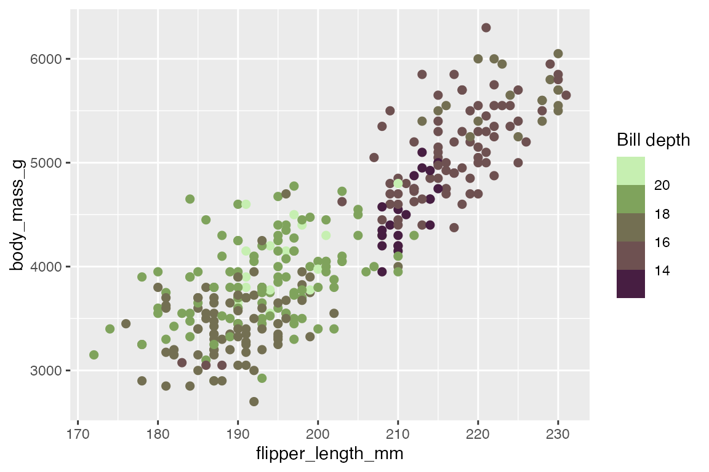
Discrete
There are many, many more discrete palettes available. A good way to see the palettes available is to filter palettes_d_names by the name of the package.
palettes_d_names |>
filter(package == "nationalparkcolors")
#> # A tibble: 25 × 5
#> package palette length type novelty
#> <chr> <chr> <int> <chr> <lgl>
#> 1 nationalparkcolors SmokyMountains 6 qualitative TRUE
#> 2 nationalparkcolors RockyMountains 5 qualitative TRUE
#> 3 nationalparkcolors Yellowstone 6 qualitative TRUE
#> 4 nationalparkcolors Arches 6 qualitative TRUE
#> 5 nationalparkcolors ArcticGates 6 qualitative TRUE
#> 6 nationalparkcolors MtMckinley 6 qualitative TRUE
#> 7 nationalparkcolors GeneralGrant 8 qualitative TRUE
#> 8 nationalparkcolors Hawaii 5 qualitative TRUE
#> 9 nationalparkcolors CraterLake 7 qualitative TRUE
#> 10 nationalparkcolors Saguaro 6 qualitative TRUE
#> # ℹ 15 more rowspdisc +
scale_color_paletteer_d(
"nationalparkcolors::BlueRidgePkwy")
show_col(
paletteer_d(
"nationalparkcolors::BlueRidgePkwy"))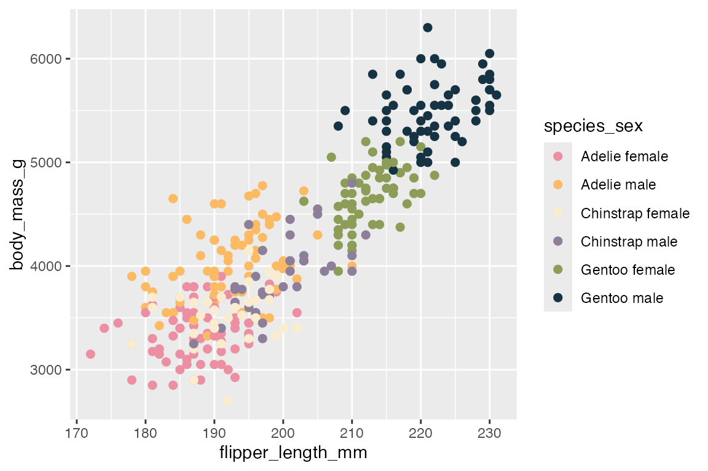
paletteer_d() also has an argument for type to allow “continuous” palette to interpolate between colors and allow more colors than are available in the discrete palette. This provides a way to either get more colors for a discrete scale or visualize what the palette looks like in a continuous scale using scale_gradientn().